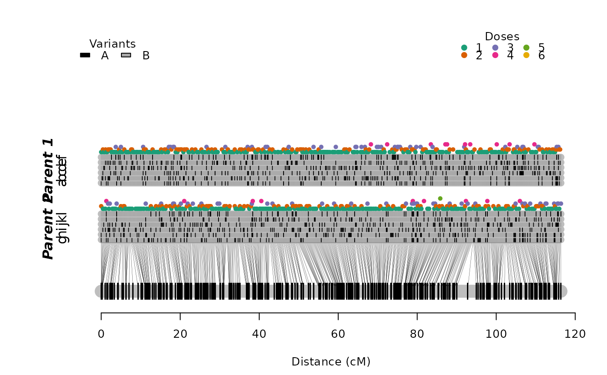
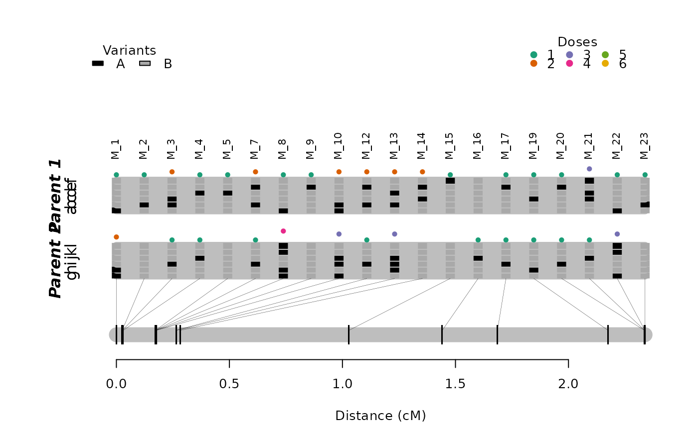
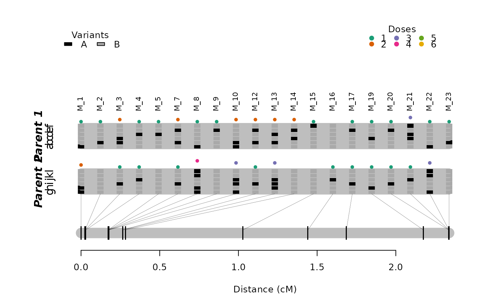

Given a pre-constructed map, it extracts a sub-map for a provided sequence of marker positions. Optionally, it can update the linkage phase configurations and respective recombination fractions.
get_submap(
input.map,
mrk.pos,
phase.config = "best",
reestimate.rf = TRUE,
reestimate.phase = FALSE,
thres.twopt = 5,
thres.hmm = 3,
extend.tail = 50,
tol = 0.1,
tol.final = 0.001,
use.high.precision = FALSE,
verbose = TRUE
)Arguments
- input.map
An object of class
mappoly.map- mrk.pos
positions of the markers that should be considered in the new map. This can be in any order
- phase.config
which phase configuration should be used. "best" (default) will choose the configuration associated with the maximum likelihood
- reestimate.rf
logical. If
TRUE(default) the recombination fractions between markers are re-estimated- reestimate.phase
logical. If
TRUE, the linkage phase configurations are re-estimated (default = FALSE)- thres.twopt
the LOD threshold used to determine if the linkage phases compared via two-point analysis should be considered (default = 5)
- thres.hmm
the threshold used to determine if the linkage phases compared via hmm analysis should be considered (default = 3)
- extend.tail
the length of the tail of the chain that should be used to calculate the likelihood of the linkage phases. If
info.tail = TRUE, the function uses at leastextend.tailas the length of the tail (default = 50)- tol
the desired accuracy during the sequential phase (default = 0.1)
- tol.final
the desired accuracy for the final map (default = 10e-04)
- use.high.precision
logical. If
TRUEuses high precision (long double) numbers in the HMM procedure implemented in C++, which can take a long time to perform (default = FALSE)- verbose
If
TRUE(default), current progress is shown; ifFALSE, no output is produced
References
Mollinari, M., and Garcia, A. A. F. (2019) Linkage analysis and haplotype phasing in experimental autopolyploid populations with high ploidy level using hidden Markov models, _G3: Genes, Genomes, Genetics_. doi:10.1534/g3.119.400378
Examples
# \donttest{
## selecting the six first markers in linkage group 1
## re-estimating the recombination fractions and linkage phases
submap1.lg1 <- get_submap(input.map = maps.hexafake[[1]],
mrk.pos = 1:6, verbose = TRUE,
reestimate.phase = TRUE,
tol.final = 10e-3)
#>
#> Estimating pairwise recombination fraction for marker sequence ...done
#>
#> Estimating sequential map:
#> ----------------------------------------
#> Number of markers: 6
#> ════════════════════════════════════════════════════════════ Initial sequence ══
#> 4 markers...
#> • Trying sequence: 1 2 3 4 :
#> 6 phase(s): . . . . . .
#> ══════════════════════════════════════════════════ Done with initial sequence ══
#> 5/5:(83.3%) 5: 1 ph (1/1) -- tail: 4 |||•|| ||||||
#> 6/6:(100%) 7: 4 ph (1/4) -- tail: 5 |••||| ||•||| ... |••||| ||||•|
#> ══════════════════════════════════ Reestimating final recombination fractions ══
#> Markers in the initial sequence: 6
#> Mapped markers : 6 (100%)
#> ════════════════════════════════════════════════════════════════════════════════
## no recombination fraction re-estimation: first 20 markers
submap2.lg1 <- get_submap(input.map = maps.hexafake[[1]],
mrk.pos = 1:20, reestimate.rf = FALSE,
verbose = TRUE,
tol.final = 10e-3)
#>
#> You selected: reestimate.rf = FALSE
#> -----------------------------------------
#> The recombination fractions provided were
#> obtained using the marker positions in the
#> input map; For accurate values, plese
#> reestimate the map using functions 'reest_rf',
#> 'est_full_hmm_with_global_error' or
#> 'est_full_hmm_with_prior_prob'
plot(maps.hexafake[[1]])

plot(submap1.lg1, mrk.names = TRUE, cex = .8)
 plot(submap2.lg1, mrk.names = TRUE, cex = .8)

# }
plot(submap2.lg1, mrk.names = TRUE, cex = .8)

# }